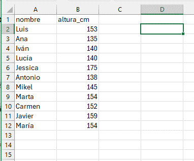

2 Los datos industriales de producción
2.1 El origen de los datos
En el entorno industrial (Douglas C Montgomery 2011), los datos provienen casi siempre de una de estas tres vías:
- Estudio retrospectivo, basado en datos históricos
- Estudio observacional
- Experimento diseñado
Un buen sistema de recogida de datos facilitará el estudio posterior. Si ponemos poco cuidado en la toma de datos y en la forma de guardarlos, nos encontraremos después con problemas complicados de resolver en la fase de análisis o en la de interpretación , y, en algunos casos, estos problemas serán imposibles de resolver.
2.1.1 Estudios retrospectivos o históricos
Un estudio retrospectivo o histórico es el que utiliza una muestra o todos los datos históricos de un proceso, recogidos en el pasado durante un período determinado de tiempo. El objetivo de un estudio de este tipo puede ser la investigación sobre la relación entre algunas variables, o explorar la calidad de la información disponible, o construir un modelo que permita explicar el proceso tal como es actualmente, o saber si se ha desviado. Estos modelos del proceso se denominan modelos empíricos, porque están basados en los propios datos del proceso y no en una formulación teórica sobre el mismo.
Un estudio retrospectivo tiene la ventaja de tener a su disposición un gran número de datos que ya han sido recogidos, minimizando el esfuerzo de obtenerlos. Sin embargo, tiene varios problemas potenciales:
- Si no disponemos de detalles suficientes, es posible que no podamos determinar si las condiciones de variación de los valores obtenidos responden a las mismas causas que en la situación actual.
- Es posible que nos falte algún valor clave que no haya sido recogido o que lo haya sido de manera defectuosa
- Algunas veces, la fiabilidad y validez de los datos de proceso históricos son dudosas, o al menos, cuestionables.
- Los datos históricos no siempre se han recogido con la perspectiva actual del proceso, y es posible que no nos proporciones explicaciones adecuadas del proceso en su situación actual.
- A veces queremos utilizar los datos históricos de proceso para fines que no estaban previstos cuando se recogieron
- Las notas sobre los valores del proceso, incluyendo los valores anormales, pueden ser insuficientes o inexistentes, y no tenemos ninguna explicación sobre los posibles valores anómalos que detectamos en el análisis.
Usar datos históricos siempre tiene el riesgo de que, por la razón que sea, no se hayan recogido datos importantes, o que estos datos se hayan perdido, o se hayan transcrito de forma inadecuada o incorrecta. Es decir, los datos históricos pueden tener problemas de calidad de datos.
El hecho de que algunos datos se hayan recogido históricamente no siempre quiere decir que estos datos sean relevantes o útiles. Cuando el grado de conocimiento del proceso no es suficiente, o no se basa en un análisis metódico y riguroso de los datos, es posible que no se hayan recogido algunos datos que pueden ser importantes para el proceso, a veces simplemente porque son complejos o difíciles de analizar. Los datos históricos no pueden proporcionar la información que buscamos si la información de las variables clave nunca se ha recogido o se ha hecho sin una buena base experimental.
El propósito del análisis de los datos industriales es aislar las causas que están detrás de los sucesos que afectan e influyen en los procesos. En los datos históricos, estos sucesos pueden haber ocurrido semanas, meses o incluso años antes, sin que haya registros ni notas que hayan intentado explicar estas causas, y los recuerdos de las personas que han participado en ellos se pierden con el tiempo, o se alteran involuntariamente, proporcionando explicaciones supuestamente válidas pero que en realidad son incorrectas. Por eso, con frecuencia, el análisis de los datos históricos puede poner de manifiesto hechos interesantes, pero sus causas quedan sin explicar.
Los estudios históricos pueden requerir una fase previa de preparación y depuración de datos que puede llegar a ser muy larga y tediosa. Se estima que en muchos estudios de ciencia de datos, el tiempo de preparación de los datos puede llegar al \(60\%\) del tiempo total empleado en el estudio. Las herramientas de análisis de datos son de gran ayuda en esta fase del proceso, aunque en muchas ocasiones será necesario un trabajo manual de recolección de datos en papel, hojas de cálculo diversas y otras fuentes. Esta fase es muy útil no sólo para la preparación de datos para el estudio, sino para mejorar el conocimiento de los datos, cómo se originan y cómo se almacenan. Este conocimiento siempre es de gran utilidad para mejorar los procedimientos actuales de captura de datos, facilitando la fiabilidad de los análisis futuros.
2.1.2 Estudios observacionales
Como su nombre indica, un estudio observacional simplemente observa un proceso durante un tiempo de operación en rutina. Normalmente, el ingeniero o técnico interfiere lo mínimo posible en el proceso, sólo lo suficiente para recoger la información que necesita, que en muchas ocasiones no forma parte de los controles de rutina, si piensa que esa información puede ser relevante. Si se planifican adecuadamente, los estudios observacionales proporcionan datos fiables, precisos y completos para documentar un proceso. Por otra parte, estos estudios proporcionan una información limitada sobre las relaciones entre las variables del proceso, porque es posible que durante el tiempo limitado de observación, el rango de variación de las variables no recoja todas las situaciones posibles; por ejemplo, las situaciones extraordinarias.
2.1.3 Experimentos diseñados
La tercera forma de recoger información de un proceso son los experimentos diseñados. En un experimento de este tipo, el ingeniero o técnico hace un cambio deliberado en las variables que controla (llamadas factores), observa el resultado, y toma una decisión respecto a qué variable o variables son responsables de los cambios que observa en el proceso.
Una diferencia importante respecto a los estudios históricos y los observacionales es que las diferentes combinaciones de factores se aplican al azar sobre un conjunto de unidades experimentales. Esto permite establecer con precisión las relaciones causa-efecto, cosa que no suele ser posible en los estudios históricos ni en los observacionales.
En el capítulo 11 se hará una introducción básica al diseño de experimentos
2.2 La organización de los datos.
Según hemos visto, existen diferentes tipos de variables, cualitativas (categóricas) y cuantitativas (métricas). Normalmente, los valores de las variables categóricas se describen mediante textos del tipo “color blanco”, “hombre”, “mujer”, “alto”, “bajo”, etc. Suelen corresponder con características descriptivas, y por lo tanto, no puede hacerse cálculos directamente con ellos, a menos que se hayan resumido, por ejemplo, mediante un conteo. Las variables métricas consisten en valores numéricos, que pueden ser enteros (\(1\);\(24\);\(350\)) o continuos (\(1,456\);\(0,35\)) y que sí pueden utilizarse directamente para hacer cálculos tales como sumas, etc.
Una variable está descrita siempre por un nombre, que designa la variable, y un valor o conjunto de valores, que corresponden a los casos. Este conjunto de valores, como acabamos de ver, pueden ser textos o números.
Ejemplos de valores de texto: “Carlos”, “fruta”, “Lluvia fuerte”, “muy ácido”, “sabor a fresa”
Ejemplos de valores numéricos: \(1\); \(7\); \(10,65\)
Siempre que sea posible, utilizaremos el nombre del atributo o característica que estamos midiendo o analizando, o su abreviatura, para designar una variable; por ejemplo, si estamos recogiendo la altura de una serie de personas, llamaremos altura a la variable; si estamos recogiendo el peso, usaremos el nombre peso, etc.
En una hoja de cálculo, colocaremos el nombre de la variable en la primera fila, e iremos añadiendo los valores debajo, un valor por línea.
A veces, asignar un nombre a una variable no es todo lo fácil que podría parecer a simple vista. Por ejemplo, ¿qué nombre daríamos a una variable que va a recoger los valores de \(pH\) de la leche en una cuba de queso en el momento de añadir el cuajo? Está claro que \(pH\) no es suficiente, porque en el proceso hay varias medidas de \(pH\) y sería bueno que pudiésemos diferenciarlas con facilidad. En un caso como éste, es probable que necesitemos utilizar varias palabras o abreviaturas que describan mejor el nombre de la variable.

Para la construcción correcta de estos nombres, se han establecido un conjunto de normas, con el objetivo de evitar errores y facilitar el intercambio de los datos entre diferentes programas de análisis.
2.2.1 Reglas para los nombres de las variables
Las hojas de cálculo admiten que introduzcamos cualquier texto en una celda; no hay prácticamente ninguna limitación a los nombres que podemos usar para nuestras variables. Excel utilizará los nombres con cualquier carácter sin inconvenientes.
Sin embargo, otros programas informáticos, entre ellos R, son mucho más restrictivos. Por esta razón, estableceremos una serie de reglas para construir los nombres de variables, que aplicaremos a nuestras tablas de Excel, y que nos permitirán intercambiarlas con otros programas, como R, con toda seguridad.
- Un nombre válido consiste en una combinación de letras, números y signo de subrayado (\(\_\))
- Un nombre de variable no puede empezar por un número, un punto o un signo de subrayado (\(\_\)); debe empezar siempre por una letra.
- Los nombres de variables irán siempre en minúsculas. Según esta regla, \(Peso\) no es un nombre válido, pero \(peso\) si lo es.
No utilizaremos espacios en blanco, acentos ni caracteres especiales como \(\tilde{n}\), \(\%\), guiones o paréntesis.
Hay veces en que nos interesa unir varias palabras para construir un nombre de variable. Se utilizan diferentes formas de unir palabras, por ejemplo:
un punto, como en \(peso.en.cm\),
lo que se ha llamado escritura de camello (camelCase), que se llama así por el uso de mayúsculas y minúsculas mezcladas (\(PesoEnCm\))
el signo de subrayado \(\_\), como en \(peso\_en\_cm\)
Algunas de estas opciones son utilizadas en distintas comunidades de usuarios, por ejemplo la opción 1 es utilizada en la guía de estilo de Google, y la opción 2 es muy utilizada por los programadores del entorno de los lenguajes de Microsoft. Nosotros utilizaremos el signo de subrayado (\(\_\)), que es la forma más usada en el entorno de programación de R.
Siempre se separarán las palabras mediante el signo de subrayado (_) para facilitar la lectura. Así, aunque \(temperatura1\) es un nombre válido, preferiremos \(temp\_1\); es más corto y de lectura más clara. Igualmente, preferiremos \(peso\_empaquetado\) a \(pesoempaquetado\)
Mantendremos los nombres razonablemente cortos para facilitar la lectura. Aunque podemos hacer los nombres todo lo largos que queramos, es más cómodo utilizar nombres cortos. Por ejemplo, podríamos utilizar \(temperatura\_de\_la\_leche\_al\_cuajar\), pero preferiremos abreviarlo como \(temp\_cuajo\).
Nombres no válidos:
- \(peso\ en\ gramos\) (contiene espacios)
- \(pH\_de\_la\_leche\_en\_Recepci\acute{o}n\) (demasiado largo, tiene un acento, tiene mayúsculas)
- \(extracto\_seco\_total\_a\_la\_salida\_de\_la\_salmuera\) (demasiado largo)
Alternativas válidas:
- \(peso\_g\)
- \(pH\_leche\_rec\) (en este caso, de manera excepcional, podemos mantener el uso de la mayúscula por corrección formal)
- \(est\_salida\_sal\)
Un caso particular es el uso de la \(\tilde{n}\), ya que no hay una alternativa fácil para el uso en las fechas (\(a\tilde{n}o\)). R admite el uso de la \(\tilde{n}\) en los nombres de variables, por lo que podremos usarlo con cuidado, poniendo atención a los posibles errores que se pudiesen producir en algunas librerías.
2.3 Para resolver
Poner aquí distintos ejemplos de nombres de variables para verii son válidos o no Describir medidas y preguntar cómo llamaríamos a esa variable (por ejemplo, temperatura de laleche que acabamos de descargar de una cisterna)
2.4 Los datos ordenados (tidy data)
De la misma manera que la gramática permite ordenar y estructurar un escrito de acuerdo a reglas comunes, hay reglas para que el almacenamiento de los datos sea lo más homogéneo posible y se reduzcan los errores al mínimo.
Las reglas principales al almacenar nuestros datos en una hoja de cálculo son tres:
columnas=variables,
filas=observaciones,
celdas=valores.
Cada variable debe tener su propia columna, cada observación debe tener su propia fila, y cada valor debe tener su propia celda o casilla .
Estas tres reglas básicas son las que hacen que nuestro conjunto de datos sea ordenado (o arreglado)(Garret Grolemund Hadley Wickham Mine Çetinkaya-Rundel 2023) (hay edición online en español: (Garret Grolemund Hadley Wickham 2023):
La Figura 2.1 muestra estas reglas de forma visual.

Estas tres reglas están interrelacionadas porque es imposible satisfacer sólo dos de tres.
En una hoja de cálculo, una tabla de datos arreglada tendría este aspecto: